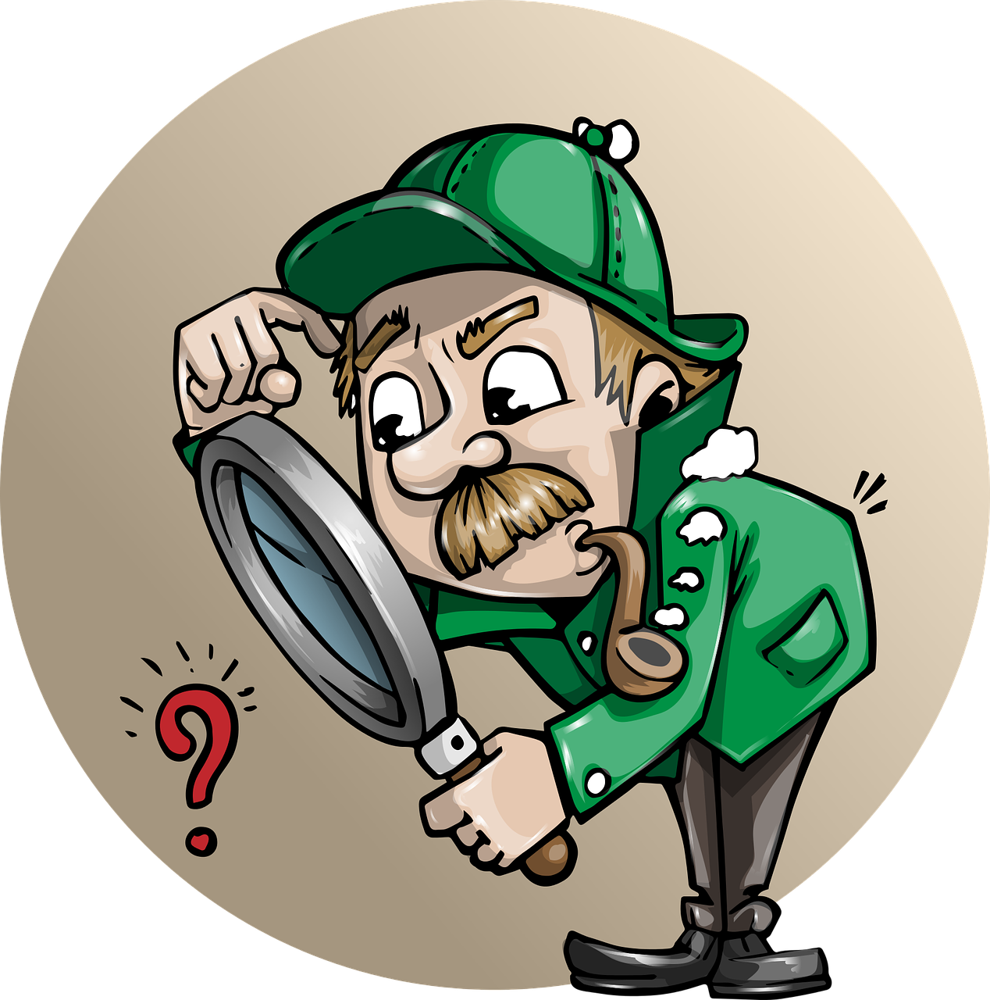
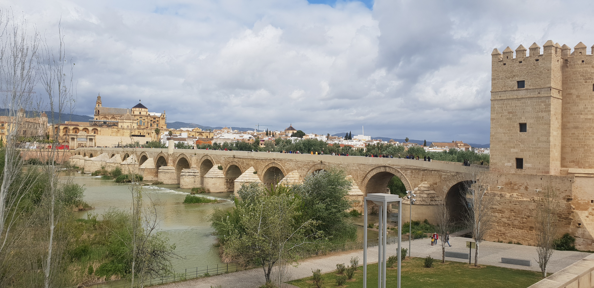
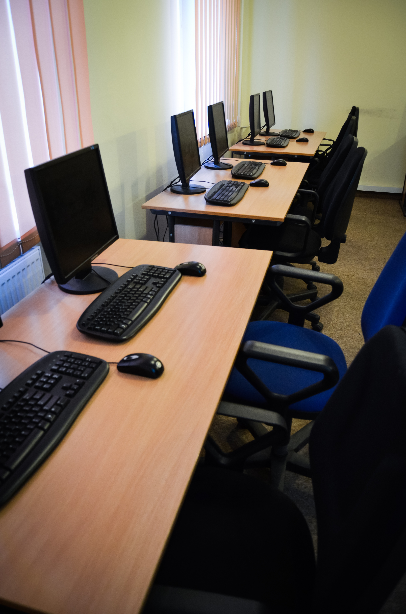

¡Bienvenidos detectives!
Comenzamos

¡Hola, equipo de investigadores! ¿Estáis preparados para una misión inolvidable?
¡Nos convertiremos en auténticos detectives! Nos vamos a sumergir en las calles de nuestra ciudad para resolver un gran enigma en "Alerta en Córdoba: Tras las huellas del dragón".
Tendremos que abrir bien los ojos, usar nuestras herramientas digitales más modernas y trabajar juntos para encontrar pistas escondidas entre monumentos, planos y leyendas. ¿Seréis capaces de descubrir dónde se esconde el dragón antes de que haga algún estropicio? ¡Coged vuestras lupas virtuales, porque la aventura por Córdoba empieza... ¡YA!
Destrozo o rotura muy ruidosa que ocurre generalmente por accidente o descuido.
Lectura facilitada
¡Misión para detectives!
¡Hola, equipo de investigación!
Tenemos una misión muy especial en Córdoba.
Nuestra ciudad tiene un gran misterio: ¡Un dragón se ha escondido en las calles!
Vuestro trabajo es encontrarlo siguiendo estas pistas:
- Mirar muy bien los monumentos antiguos.
- Estudiar los mapas de la ciudad.
- Leer las leyendas y cuentos de Córdoba.
¿Qué necesitamos?
- Trabajar en equipo.
- Usar las herramientas digitales.
¡Tener muchas ganas de aventura!
¿Estáis preparados? ¡La misión empieza ahora!
Introducción
¿Alguna vez habéis caminado por las calles de Córdoba y habéis sentido que los muros de piedra guardan un secreto? ¿O habéis mirado hacia arriba, a lo alto de un edificio antiguo, y os ha parecido ver una sombra con alas y escamas?
Pues nuestra ciudad es como un “mapa del tesoro gigante" donde, entre flores y fuentes, se esconde la leyenda de una criatura legendaria. Pero para encontrarla, primero debemos aprender a mirar con ojos de detective y conocer los secretos que se ocultan en sus rincones.
¡Dadle al "play" y preparaos para descubrir vuestra primera visita!
Lectura facilitada
¿Alguna vez has visto sombras extrañas en los edificios antiguos de Córdoba?
Parece que hay un animal con alas y escamas escondido en la ciudad.
Córdoba es como un mapa del tesoro.
Hay secretos escondidos entre:
- Las flores de los patios.
- Las fuentes de las plazas.
- Los muros de piedra.
Para encontrar a la criatura legendaria, debemos ser buenos detectives.
Primero vamos a conocer los rincones más antiguos de nuestra ciudad.
¿Quieres descubrir la primera pista?
¡Dale al botón de 'play' y empieza el video!
¿Qué vamos a descubrir en nuestra misión?
- Pistas de leyenda: ¡Convertiremos Córdoba en un tablero de juego! Buscaremos pistas en sus monumentos.
- Tesoros de la humanidad: Entraremos en un "bosque de columnas" mágicas y descubriremos por qué personas de todo el mundo vienen a visitar nuestra ciudad. ¡Es un tesoro que debemos proteger!
- Herramientas digitales de detective: Aprenderemos a usar mapas mágicos, pizarras digitales compartidas y aplicaciones secretas para organizar todas nuestras pistas sin que se nos escape nada.
- Superpoderes de internet: Aprenderemos a navegar por la red como profesionales, esquivando trampas y compartiendo nuestros hallazgos de forma segura para que todo el mundo vea nuestro gran trabajo.
Así que, ¡preparad vuestras lupas, encended vuestros ordenadores y agudizad el ingenio! Porque la búsqueda de las huellas del dragón por Córdoba está a punto de comenzar.
¿Listos para el desafío? ¡A la de tres: uno, dos, tres... ¡A investigar!
Lectura facilitada
¡Bienvenidos, detectives! Vamos a jugar en las calles de Córdoba. Nuestra misión es encontrar las huellas de un dragón escondido.
1. El Juego de las Pistas
Buscaremos pistas en los monumentos antiguos.
2. El Tesoro del Bosque Mágico
Visitaremos la Mezquita-Catedral. Es un tesoro muy importante que debemos cuidar.
3. Herramientas de Detective
Usaremos tecnología para organizar nuestras pistas.
Mapas digitales: para no perdernos.
Pizarras compartidas: para escribir nuestras ideas en grupo.
Aplicaciones: para guardar nuestros secretos.
4. Superpoderes de Internet
Aprenderemos a usar internet de forma segura.
Enseñaremos nuestro trabajo a todo el mundo.
¿Estás preparado para el desafío? Prepara tu lupa y enciende tu ordenador. ¡La aventura empieza ya!
A la de tres empezamos a investigar ¡Uno, dos y tres!
Apoyo visual
Buscar pistas escondidas

Pixabay. Imagen de Sherlock Holmes, Detective e Investigador. De uso gratuito.
Tesoros en la ciudad

Pixabay. Imagen de Córdoba, España y Andalucía. De uso gratuito. Imagen de pcarrascogarcia en Pixabay.
Usar herramientas tecnológicas

Pixabay. Imagen de Escuela, Habitación y Capacitación. De uso gratuito. Imagen de Jermain Allen en Pixabay.
Usar internet de forma segura
Pixabay. Imagen de Google, Www y Buscar en línea. De uso gratuito.
Organizador mental
CENTRO DE INTERÉS de Esther María Gil Barragán